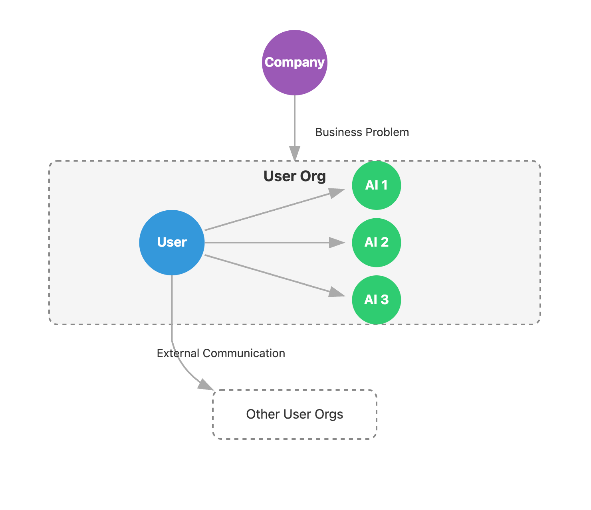

AI Systems for the Storyteller
You get to your office desk, run your data through your analytics AI agent, smile at the pretty charts, and then take a moment to appreciate how far you've come from a thousand days ago when you did all of this on your own.
Next, you get ready for stand-up where you'll present "your" analysis in the form of a nice logical story. But then something interesting happens. Unlike ChatGPT, a colleague questions a critical assumption you made—"I think this column means something else." You pause, realize your mistake and get to redoing the analysis, this time completely yourself.
This blog will:
- Describe the delegation problem in AI systems
- Make concrete recommendations for building more robust systems
The Problem
As models improve every few months, our instinct to hand them bigger chunks of work grows. A common pattern:
- Skim the high-level business problem
- Translate it into a semi-vague prompt
- Receive the agent output and format it for the team
This produces three gaps:
- Misunderstanding of the problem (key assumptions untested)
- Lack of insight into the agent's reasoning
- Low-signal communication with the rest of the team
To summarize: Delegation → disengagement → poor storytelling → weaker outcomes.
The problem: user acts as a pass-through for business problems.
The Goal
Instead of acting as a pass-through, the user should be an active storyteller—questioning, revising, and weaving a coherent narrative that solves the business problem. We should aim for a tighter coupling between the user and the AI.

The goal: tighter coupling between the user and AI.
Designing Effective Systems
Below are guiding principles and concrete suggestions for building human–AI systems that encourage scrutiny, collaboration, and clear storytelling:
1. Show, Don't Just Tell
Hidden reasoning kills understanding.
- Surface key assumptions: Have the agent print the premises it inferred ("growth = MAU", "seasonality ignored")
- Expose the full trace: List data sources, filters, and model hops so users know where numbers came from
- Quantify uncertainty: Attach confidence scores and offer at least one alternative interpretation the agent briefly considered and rejected
2. Bias Towards Feedback Loops
- Clarify early: The agent should ask follow-ups when context is thin ("profit or revenue?")
- Inline feedback loops: Let users mark-up sentences or figures; the agent re-runs only the affected sections
- Prompt scaffolds: Replace the blank box with a short form: goal, data, constraints, output style—three fields that force clearer thinking
3. The User Holds the Pen
Ownership keeps analysts engaged and prevents blind acceptance of pretty charts.
- Editable outputs: Deliver docs & decks that open in the native editor, not a PDF tomb
- Expose dials: Dates, segments, model temperature—make them sliders the user can tweak in seconds
- Branch, don't overwrite: One-click "fork" spawns a sibling analysis so competing assumptions can coexist
4. Preserve Context
Storytelling is about context, context, and context.
- Bridge silos: Pipe CRM notes, support tickets, and finance tables into the same workspace so the agent can cross-reference
- Prime with domain knowledge: Load the company glossary, past retros, and known KPI definitions before each session to cut re-explaining
5. Focus on the Narrative Arc
A list of facts is good but a story is what moves decisions.
- Outline first: The agent proposes a 3-line arc ("problem → evidence → action") before writing prose
- Synthesize, don't stack: Encourage paragraphs that connect dots ("sales dipped after marketing paused campaigns") rather than bullet dumps
Takeaway
AI accelerates workflows, but key decisions will still be moved by human voice in the near future. Stay in the loop, shape the arc, and make the numbers speak.